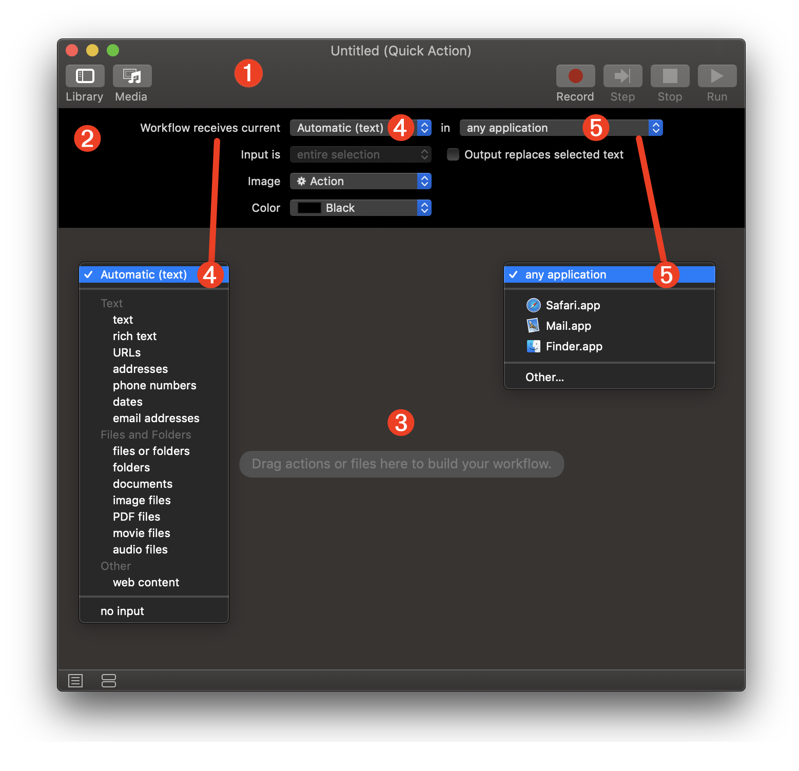
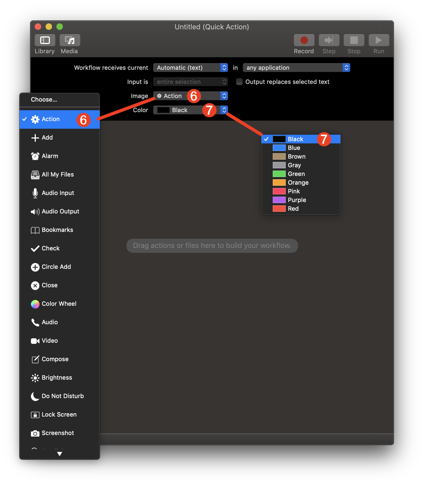
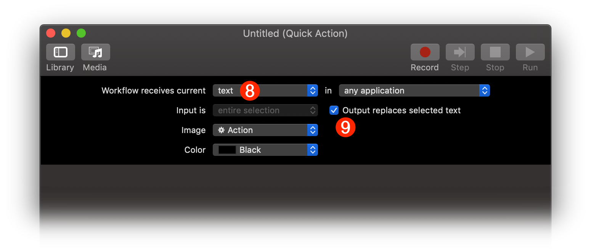
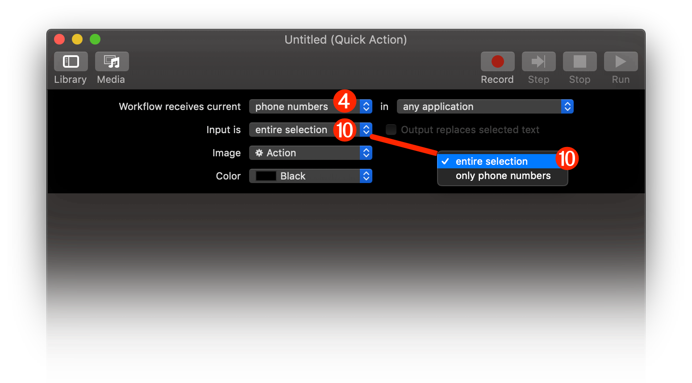
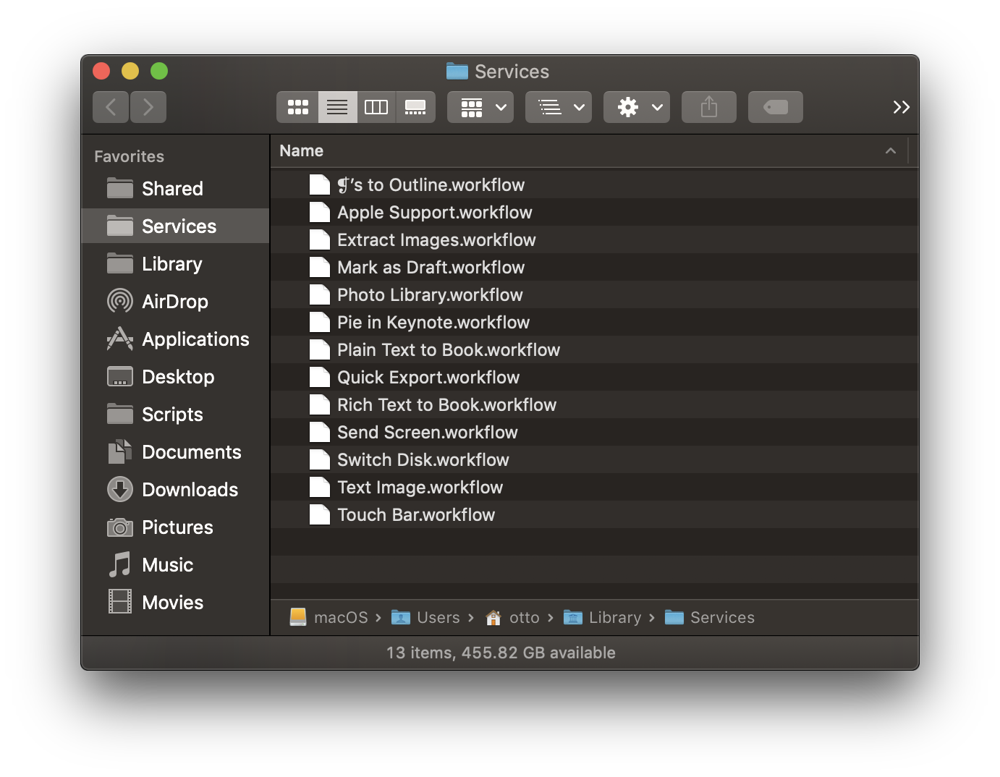
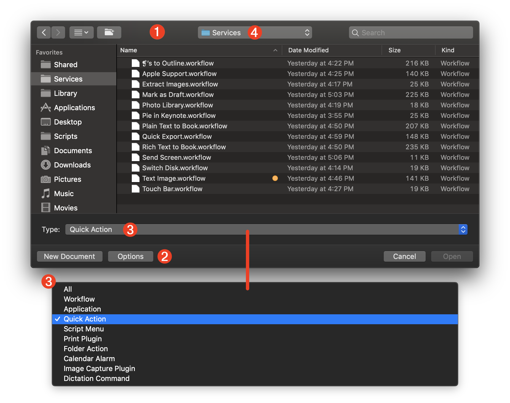
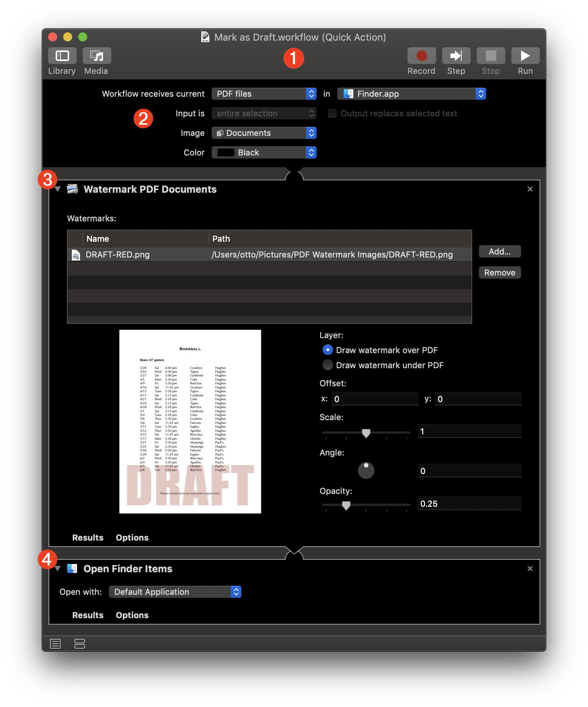

TAP TO HIDE SIDEBAR


Automator: Quick Actions
Beginning with macOS Mojave (v10.14), Automator Services workflows have been given new abilities and a new name: “Quick Actions”
While retaining all of the current features of its deep integration with the macOS contextual System Services architecture, Automator “Quick Actions” can now also be saved and accessed as system extensions, from within a Finder window’s Preview pane, or on the Macbook Pro Touch Bar.
The following documentation shows how to create a Quick Action (Services) workflow and how to control its integration in macOS as either an Extension or as a Service.
Services (Quick Action) Workflow Window
When the “Quick Action” workflow is chosen from the Automator template sheet, a new workflow window like this is created, displaying the workflow input controls common to all contextual system service workflows.

1 The Automator workflow document window.
2 The workflow input settings banner contains controls for identifying the data type of the workflow input, the application context in which the workflow is available, and the icon and color used to represent the workflow.
3 The workflow assembly pane where Automator actions are placed in the order in which they are executed.
4 The workflow input type menu determines the both the data and context required by the workflow. For example, if the chosen data type is “PDF files” then the workflow will only be enabled when one or more PDF files are selected. For those workflows that are not dependent upon having input, choose the “no input” option at the end of the menu.
5 The chosen item on the application context menu determines in which application the workflow will be used. Choose the “any application” setting to have the workflow always available regardless of which application in frontmost.
Beginning in macOS Mojave (v10.14) Automator Quick Actions (service workflows) have the option to be displayed and accessed from a Finder window’s Preview pane, and/or the Macbook Touch Bar. Consequentially, the workflow settings banner contains controls for assigning an icon and color to the workflow that is used in its display in the those locations.

1 You can select an icon for the Quick Action from the list of provided elements, or choose an image file. The chosen icon is displayed on eiher the Finder window Preview pane or the Macbook Touch Bar, and in the Extensions system prference pane. NOTE: a good template size for custom icon images is 36 by 36 pixels at 144 DPI resolution. Save the images in PNG format with an alpha channel. For more information, see the Custom Quick Action Icons section at the bottom of this page.
2 The selected color is used when displaying the Quick Action in the Macbook Touch Bar.
When the workflow’s input data type is set to either text, rich text, or Automatic (text), the option to replace the current application text selection with the results of the workflow, is enabled.

8 When the service input type is set to either text, rich text, or Automatic (text) the checkbox 9 for indicating replacement of the current text selection with the workflow result is enabled.
9 When this checkbox is enabled and selected, the contents of the current text selection will be replaced with the output of the workflow. If the checkbox is not selected, the current text selection will remain as is.
Option filtering of the current text selection is available when the input data type is set for text elements, such as: URLs, addresses, phone numbers, dates, or email addresses. When one of these input types is chosen, option to pass only a list of the text elements found in the current text selection, or the entire selection, to the workflow, is enabled.

4 When the service input type is set to specific textual elements, like URLs, phone numbers, or addresses, you have the option to either pass only a list of the textual elements found in the current text selection, or to pass the entire current text selection, as input to the workflow.
10 The popup menu options to either pass only a list of the textual elements found in the current text selection, or to pass the entire current text selection, as input to the workflow.
Services Folder
By default, service workflows are activated when they are saved or placed into the Services folder in your Home Library folder. If a service workflow is removed from this folder, it will no longer be available as a Quick Action.

To edit installed Automator “Quick Actions” (and other workflow types), choose “Open…” (⌘O) from the Automator File menu. In the forthcoming file chooser dialog 1 click the “Options” button 2 to reveal the workflow type popup menu 3 and select the type of installed workflow you wish to edit from the popup menu. The contents of the designated folder containing the specified type of workflow 4 will be displayed in the dialog.

TIP: to reveal a workflow file selected in this dialog in the Finder, type Command-R (⌘R) and the Finder application will come forward showing the containing folder with the item selected.
Custom Quick Action Icons
Quick Action workflows may be assigned a custom icon image that you or other create. A good template size for custom icon images is 36 by 36 pixels at 144 DPI resolution, saved in PNG format with an alpha channel.
An excellent resource for workflow icons is the Google Material Design Icons collection, which contain dozens of useful icons for all aspects of computer usage. The icons displayed below are examples from that collection.
Example Quick Action
Here is an example of a Quick Action workflow. This Quick Action can be displayed on either the Finder Preview pane and/or the Touch Bar when the Finder is the frontmost application. It will watermark the selected PDF files using a specified image and transparency.
TIP: download a set of watermark images in red and blue: DRAFT, CONFIDENTIAL, EYES ONLY, and FINAL

1 The Automator workflow document.
2 The workflow input banner with controls set to accept PDF files selected in the Finder application.
3 The Watermark PDF Documents Automator action will render the specified watermark image into the PDF file passed as input to the action. The resulting watermarked document will be passed to the next action.
4 The Open Finder Items action will open the watermarked file into whatever application is assigned as the default application for editing PDF files, which by default, is the Preview application.
Videos from MacBreak Dev
Here are links to podcast videos with Alex Lindsey about Services.
DISCLAIMER